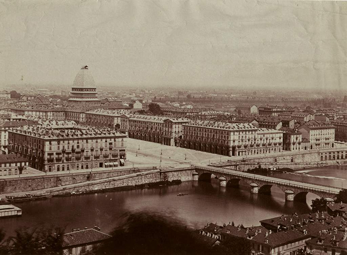

Weboldalrendszerünk
Osztályunk diákjai saját oldalakon számoltak be kirándulásunk helyszineiről és élményeiről
- Ipari Forradalom Torinóban
- Szalézi Szent Ferenc Élete
- Milánó
- Szalézi Szent Ferenc Templom

Osztályunk diákjai saját oldalakon számoltak be kirándulásunk helyszineiről és élményeiről
